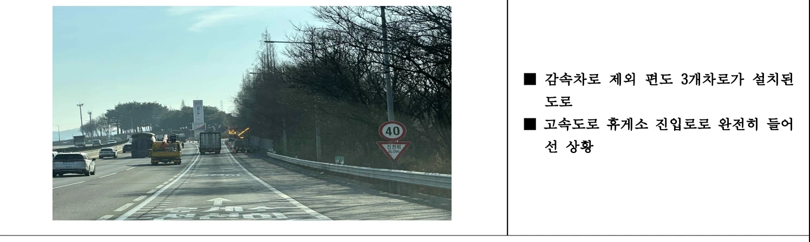

744. Which of the following are the incorrect ways to drive in the given situation? (Select TWO)

- ①Gradually slow down.
- ②Watch out for construction vehicles ahead.
- ③Keep a safe distance from the vehicle ahead.
- ④Stop briefly behind the construction vehicle to use your mobile phone.
- ⑤If you decide not to stop at a rest area, immediately switch to the third lane with the turn signal on, while keeping an eye on the left side-view mirror.
Show answer
Answer
④ Stop briefly behind the construction vehicle to use your mobile phone.
⑤ If you decide not to stop at a rest area, immediately switch to the third lane with the turn signal on, while keeping an eye on the left side-view mirror.
Reference
There is a high risk of an accident if there is sudden braking or rapid deceleration on the highway. You should slow down as gradually as possible and adhere to the speed limit. The solid white line has the meaning of restricting route changes (Road Traffic Act Enforcement Rules [Appendix 6] Serial No. 503).
Reference text is a machine translation for study.